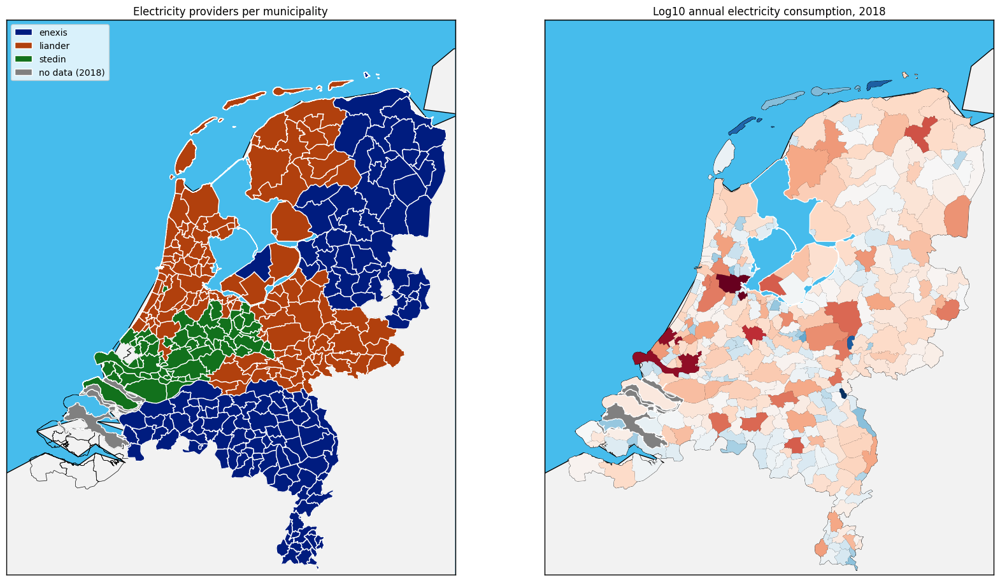

Energie in Nederland#
from google.colab import drive
drive.mount('/content/drive')
---------------------------------------------------------------------------
ModuleNotFoundError Traceback (most recent call last)
Cell In[1], line 1
----> 1 from google.colab import drive
2 drive.mount('/content/drive')
ModuleNotFoundError: No module named 'google'
%cd drive/MyDrive/electricity_dataset/Electricity
/content/drive/MyDrive/electricity_dataset/Electricity
import pandas as pd
import os
!pip install geopandas
!pip3 install basemap
from matplotlib.patches import Polygon as PG
from matplotlib.collections import PatchCollection
from matplotlib.colors import Normalize
import geopandas as gpd
import folium
from matplotlib.patches import Patch
from shapely.geometry import Point, Polygon
import shapely.speedups
from geopandas import GeoDataFrame
import numpy as np # linear algebra
import pandas as pd # data processing, CSV file I/O (e.g. pd.read_csv)
from datetime import datetime
import matplotlib.pyplot as plt
import matplotlib.cm
from matplotlib import gridspec
import matplotlib as mpl
import seaborn as sns
from mpl_toolkits.basemap import Basemap
from matplotlib.patches import Polygon
from matplotlib.collections import PatchCollection
from matplotlib.colors import Normalize
df_csv_append = pd.DataFrame()
df_csv_append = pd.read_csv('coteq_electricity_2020.csv')
len(df_csv_append)
2575
df_csv_append.head()
| net_manager | purchase_area | street | zipcode_from | zipcode_to | city | num_connections | delivery_perc | perc_of_active_connections | type_conn_perc | type_of_connection | annual_consume | annual_consume_lowtarif_perc | smartmeter_perc | |
|---|---|---|---|---|---|---|---|---|---|---|---|---|---|---|
| 0 | Cogas Infra & Beheer BV | Netbeheerder Centraal Overijssel B.V. | Dorpsstraat | 7468CP | 7471AA | ENTER | 19 | 89 | 95 | 89 | 1x35 | 3810 | 89 | 89 |
| 1 | Cogas Infra & Beheer BV | Netbeheerder Centraal Overijssel B.V. | De Stoevelaar | 7471AB | 7471AB | GOOR | 40 | 100 | 98 | 78 | 1x35 | 2637 | 95 | 83 |
| 2 | Cogas Infra & Beheer BV | Netbeheerder Centraal Overijssel B.V. | De Stoevelaar | 7471AC | 7471AC | GOOR | 16 | 100 | 100 | 100 | 1x35 | 1366 | 100 | 94 |
| 3 | Cogas Infra & Beheer BV | Netbeheerder Centraal Overijssel B.V. | De Stoevelaar | 7471AD | 7471AE | GOOR | 41 | 93 | 85 | 54 | 3x25 | 5101 | 93 | 78 |
| 4 | Cogas Infra & Beheer BV | Netbeheerder Centraal Overijssel B.V. | Kerkstraat | 7471AG | 7471AG | GOOR | 14 | 86 | 100 | 36 | 1x25 | 4315 | 100 | 93 |
municip_geo = gpd.read_file('../../geo_files/gadm41_NLD_2.shp')
municip_geo.head(2)
| GID_2 | GID_0 | COUNTRY | GID_1 | NAME_1 | NL_NAME_1 | NAME_2 | VARNAME_2 | NL_NAME_2 | TYPE_2 | ENGTYPE_2 | CC_2 | HASC_2 | geometry | |
|---|---|---|---|---|---|---|---|---|---|---|---|---|---|---|
| 0 | NLD.1.1_1 | NLD | Netherlands | NLD.1_1 | Drenthe | NA | Aa en Hunze | NA | NA | Gemeente | Municipality | NA | NL.DR.AH | POLYGON ((6.56990 52.94651, 6.57448 52.95006, ... |
| 1 | NLD.1.2_1 | NLD | Netherlands | NLD.1_1 | Drenthe | NA | Assen | NA | NA | Gemeente | Municipality | NA | NL.DR.AS | POLYGON ((6.64079 53.02571, 6.63922 53.02304, ... |
municip_geo = gpd.read_file('../../geo_files/gadm41_NLD_2.shp')
municip_geo.head(2)
f, ax = plt.subplots(figsize = (10,15))
m = Basemap(resolution='l',
projection='merc',
lat_0=54.5, lon_0=-4.36,
llcrnrlon=3.15, llcrnrlat= 50.7, urcrnrlon=7.3, urcrnrlat=53.84, ax=ax)
m.drawmapboundary(fill_color='#46bcec')
m.fillcontinents(color='#f2f2f2',lake_color='#46bcec')
m.readshapefile('../../geo_files/gadm41_NLD_2','geometry')
m.drawcoastlines()
municip_geo.head()
provinces = municip_geo.NAME_1.unique()
colors = sns.color_palette('Paired',len(provinces))
lut = dict(zip(provinces,colors))
legend_elements = []
for province in provinces:
prov = []
for info, shape in zip(m.geometry_info, m.geometry):
if (info['NAME_1'] == province) & (province not in ['Zeeuwse meren','IJsselmeer', 'Zuid Hollandse Meren']):
prov.append( PG(np.array(shape), True) )
ax.add_collection(PatchCollection(prov, facecolor= lut[province], edgecolor='k', linewidths=.1, zorder=2))
if province not in ['Zeeuwse meren','IJsselmeer']:
legend_elements.append(Patch(facecolor=lut[province], edgecolor='k',
label=province))
ax.legend(handles=legend_elements)
<ipython-input-44-d50a59e722d2>:24: MatplotlibDeprecationWarning: Passing the closed parameter of __init__() positionally is deprecated since Matplotlib 3.6; the parameter will become keyword-only two minor releases later.
prov.append( PG(np.array(shape), True) )
<matplotlib.legend.Legend at 0x7fd6a97fcb80>
municip_geo.head(80)
| GID_2 | GID_0 | COUNTRY | GID_1 | NAME_1 | NL_NAME_1 | NAME_2 | VARNAME_2 | NL_NAME_2 | TYPE_2 | ENGTYPE_2 | CC_2 | HASC_2 | geometry | |
|---|---|---|---|---|---|---|---|---|---|---|---|---|---|---|
| 0 | NLD.1.1_1 | NLD | Netherlands | NLD.1_1 | Drenthe | NA | Aa en Hunze | NA | NA | Gemeente | Municipality | NA | NL.DR.AH | POLYGON ((6.56990 52.94651, 6.57448 52.95006, ... |
| 1 | NLD.1.2_1 | NLD | Netherlands | NLD.1_1 | Drenthe | NA | Assen | NA | NA | Gemeente | Municipality | NA | NL.DR.AS | POLYGON ((6.64079 53.02571, 6.63922 53.02304, ... |
| 2 | NLD.1.3_1 | NLD | Netherlands | NLD.1_1 | Drenthe | NA | Borger-Odoorn | NA | NA | Gemeente | Municipality | NA | NL.DR.BO | POLYGON ((6.74567 52.87925, 6.74431 52.88375, ... |
| 3 | NLD.1.4_1 | NLD | Netherlands | NLD.1_1 | Drenthe | NA | Coevorden | NA | NA | Gemeente | Municipality | NA | NL.DR.CO | POLYGON ((6.87156 52.65302, 6.87122 52.65298, ... |
| 4 | NLD.1.5_1 | NLD | Netherlands | NLD.1_1 | Drenthe | NA | De Wolden | NA | NA | Gemeente | Municipality | NA | NL.DR.DW | POLYGON ((6.27322 52.66813, 6.27347 52.66819, ... |
| ... | ... | ... | ... | ... | ... | ... | ... | ... | ... | ... | ... | ... | ... | ... |
| 75 | NLD.4.54_1 | NLD | Netherlands | NLD.4_1 | Gelderland | NA | Scherpenzeel | NA | NA | Gemeente | Municipality | NA | NL.GE.SC | POLYGON ((5.49951 52.11150, 5.50684 52.11150, ... |
| 76 | NLD.4.56_1 | NLD | Netherlands | NLD.4_1 | Gelderland | NA | Tiel | NA | NA | Gemeente | Municipality | NA | NL.GE.TI | POLYGON ((5.34473 51.87448, 5.34765 51.87448, ... |
| 77 | NLD.4.58_1 | NLD | Netherlands | NLD.4_1 | Gelderland | NA | Voorst | NA | NA | Gemeente | Municipality | NA | NL.GE.VS | POLYGON ((6.08478 52.14489, 6.08231 52.14876, ... |
| 78 | NLD.4.60_1 | NLD | Netherlands | NLD.4_1 | Gelderland | NA | Wageningen | NA | NA | Gemeente | Municipality | NA | NL.GE.WG | POLYGON ((5.61195 51.99472, 5.61342 51.99831, ... |
| 79 | NLD.4.79_1 | NLD | Netherlands | NLD.4_1 | Gelderland | NA | West Betuwe | NA | NA | Gemeente | Municipality | NA | NA | POLYGON ((5.25991 51.93630, 5.27160 51.93363, ... |
80 rows × 14 columns
def load_and_reindex(path,filelist):
start_time = datetime.now()
df = None
for file in filelist:
year = file[-8:-4]
manager = file.split('_')[0]
if df is None:
df = pd.read_csv(path+file)
df['year'] = year
df.index = manager+'_'+year+'_'+df.index.astype(str)
else:
temp = pd.read_csv(path+file)
temp['year'] = year
temp.index = manager+'_'+year+'_'+temp.index.astype(str)
df = df.append(temp)
# adding columns of interest
df.fillna(0)
df['low_tarif_consumption'] = df['annual_consume'].multiply(df['annual_consume_lowtarif_perc']/100)
df['num_active_connections'] = df['num_connections'].multiply(df['perc_of_active_connections']/100).astype('int', errors='ignore')
try:
df['num_smartmeters'] = df['num_connections'].multiply(df['smartmeter_perc']/100).astype(int)
except ValueError:
df['num_smartmeters'] = df['num_connections'].multiply(df['smartmeter_perc']/100)
#print('Number of smartmeters could not be calculated')
df['net_annual_consumption'] = df['annual_consume'].multiply(df['delivery_perc']/100)
df['self_production'] = df['annual_consume'] - df['net_annual_consumption']
df['self_prod_perc'] = df['self_production'].divide(df['annual_consume']/100)
time_elapsed = datetime.now() - start_time
print('Made main dataframe, time elapsed (hh:mm:ss.ms) {}'.format(time_elapsed))
return(df)
path = '../Electricity/'
files_all = [f for f in os.listdir(path)]
elec_all = load_and_reindex(path,files_all)
All these functions assume the existence of lists and dataframes loaded above It’s a bit messy, but fairly obvious what I am using here
Dataframes: postalcode_geoloc elec_all municip_geo
Lists: meancols sumcols
# first get the data into the right form
elec_all['zipcode_from_int'] = elec_all['zipcode_from'].str[:-2].astype(int)
elec_all['zipcode_to_int'] = elec_all['zipcode_to'].str[:-2].astype(int)
elec_all['zidiff'] = elec_all['zipcode_to_int'] - elec_all['zipcode_from_int']
sumcols = ['annual_consume','num_connections','low_tarif_consumption','num_active_connections','num_smartmeters','net_annual_consumption','self_production']
meancols = ['annual_consume_lowtarif_perc','delivery_perc','perc_of_active_connections','smartmeter_perc','self_prod_perc']
elec_all['provider'] = [f[0] for f in elec_all.index.str.split('_')]
# add postalcode geolocations
postalcode_geoloc = pd.read_csv('../../geo_files/4pp.csv').set_index('postcode',drop=False)
elec_all.head()
| net_manager | purchase_area | street | zipcode_from | zipcode_to | city | num_connections | delivery_perc | perc_of_active_connections | type_conn_perc | ... | low_tarif_consumption | num_active_connections | num_smartmeters | net_annual_consumption | self_production | self_prod_perc | zipcode_from_int | zipcode_to_int | zidiff | provider | |
|---|---|---|---|---|---|---|---|---|---|---|---|---|---|---|---|---|---|---|---|---|---|
| coteq_2014_0 | Coteq Netbeheer BV | Netbeheerder Centraal Overijssel B.V. | Dorpsstraat | 7468CP | 7471AA | ENTER | 19.0 | 89.47 | 94.74 | 89.0 | ... | 3687.9534 | 18.0006 | 0.0 | 3687.9534 | 434.0466 | 10.53 | 7468 | 7471 | 3 | coteq |
| coteq_2014_1 | Coteq Netbeheer BV | Netbeheerder Centraal Overijssel B.V. | De Stoevelaar | 7471AB | 7471AB | GOOR | 37.0 | 100.00 | 100.00 | 86.0 | ... | 1702.6200 | 37.0000 | 0.0 | 1800.0000 | 0.0000 | 0.00 | 7471 | 7471 | 0 | coteq |
| coteq_2014_2 | Coteq Netbeheer BV | Netbeheerder Centraal Overijssel B.V. | De Stoevelaar | 7471AC | 7471AC | GOOR | 16.0 | 100.00 | 100.00 | 100.0 | ... | 1315.0000 | 16.0000 | 0.0 | 1315.0000 | 0.0000 | 0.00 | 7471 | 7471 | 0 | coteq |
| coteq_2014_3 | Coteq Netbeheer BV | Netbeheerder Centraal Overijssel B.V. | De Stoevelaar | 7471AD | 7471AE | GOOR | 25.0 | 92.00 | 84.00 | 44.0 | ... | 5868.6800 | 21.0000 | 0.0 | 5868.6800 | 510.3200 | 8.00 | 7471 | 7471 | 0 | coteq |
| coteq_2014_4 | Coteq Netbeheer BV | Netbeheerder Centraal Overijssel B.V. | Kerkstraat | 7471AG | 7471AG | GOOR | 14.0 | 85.71 | 100.00 | 36.0 | ... | 4089.5544 | 14.0000 | 0.0 | 3774.6684 | 629.3316 | 14.29 | 7471 | 7471 | 0 | coteq |
5 rows × 28 columns
def make_group_zipcode(year,df):
df = df[df.year==year]
pc_df = df.groupby('zipcode_from_int').sum()[sumcols]#.count()['city']
pc_df = pc_df.join(df.groupby('zipcode_from_int').mean()[meancols])
pc_df = pc_df.join(df.groupby('zipcode_from_int').count()['city']).rename({'city':'code_count'},axis=1)
pc_df = pc_df.join(df.groupby('zipcode_from_int').first()[['city','provider']])
values = [year+'_'+f for f in pc_df.columns]
pc_df.rename(dict(zip(pc_df.columns,values)),axis=1,inplace=True)
pc_df = pc_df.join(postalcode_geoloc,how='left') #add geolocation
geometry = [Point(xy) for xy in zip(pc_df.longitude, pc_df.latitude)]
crs = {'init': 'epsg:4326'}
gdf = GeoDataFrame(pc_df, crs=crs, geometry=geometry) # make geopandas df
pc_df = attach_municip(pc_df,gdf)
return pc_df
def attach_municip(df,geodf):
for municip in municip_geo.GID_2:
idx = municip_geo[municip_geo.GID_2==municip].index[0]
municip_name = municip_geo.loc[idx,'NAME_2']
ingroup = list(geodf[geodf['geometry'].within(municip_geo.loc[idx,'geometry'])==True].index)
df.loc[ingroup,'GID_2'] = municip
df.loc[ingroup,'NAME_2'] = municip_name
return(df)
def merge_energy_data_into_municip(df,year):
pc_df = make_group_zipcode(year,df)
firstcols = ['NAME_2','provincie','netnummer',year+'_provider']
meancols_y = [year+'_'+f for f in meancols]
sumcols_y = [year+'_'+f for f in sumcols]
sumcols_y.append(year+'_code_count')
final_frame = pc_df.groupby('GID_2').first()[firstcols]
final_frame['GID_2'] = final_frame.index
final_frame = final_frame.join(pc_df.groupby('GID_2').mean()[meancols_y])
final_frame = final_frame.join(pc_df.groupby('GID_2').sum()[sumcols_y])
polygon_frame = pd.DataFrame({
'shapes': [PG(np.array(shape),True) for shape in m.geometry],
'GID_2': [area['GID_2'] for area in m.geometry_info]})
polygon_frame.reset_index(drop = True, inplace = True)
final_frame.reset_index(drop = True, inplace = True)
polygon_frame = polygon_frame.merge(final_frame, on='GID_2', how='left')
return final_frame, polygon_frame
fin_2018, poly2018 = merge_energy_data_into_municip(elec_all,'2018')
pc_2018 = make_group_zipcode('2018',elec_all)
f,ax = plt.subplots(figsize=(11,13))
#pc2018.plot.scatter('longitude','latitude',s=pc2018['2018_num_active_connections'].astype(float).divide(2e2)
# ,alpha=.4,ax=ax)
pc_2018.plot.scatter('longitude','latitude',s=pc_2018['2018_num_active_connections'].astype(float).divide(2e2)
,alpha=.4,ax=ax)
plt.title('Number of active connections per 4-digit postal code, 2018')
fin_2011, poly2011 = merge_energy_data_into_municip(elec_all,'2011')
fin_2012, poly2012 = merge_energy_data_into_municip(elec_all,'2012')
fin_2013, poly2013 = merge_energy_data_into_municip(elec_all,'2013')
fin_2014, poly2014 = merge_energy_data_into_municip(elec_all,'2014')
fin_2015, poly2015 = merge_energy_data_into_municip(elec_all,'2015')
fin_2016, poly2016 = merge_energy_data_into_municip(elec_all,'2016')
fin_2017, poly2017 = merge_energy_data_into_municip(elec_all,'2017')
fin_2018, poly2018 = merge_energy_data_into_municip(elec_all,'2018')
# pd.set_option('display.max_rows', poly2018.shape[0]+1)
# print(poly2018)
f, ax = plt.subplots(1,2,figsize = (20,24))
m = Basemap(resolution='l', # c, l, i, h, f or None (courseness)
projection='merc',
lat_0=54.5, lon_0=-4.36,
llcrnrlon=3.15, llcrnrlat= 50.7, urcrnrlon=7.3, urcrnrlat=53.84, ax=ax[0])
m.drawmapboundary(fill_color='#46bcec')
m.fillcontinents(color='#f2f2f2',lake_color='#46bcec')
m.readshapefile('../../geo_files/gadm41_NLD_2','geometry')
m.drawcoastlines()
providers = ['enexis','liander','stedin']
colors = sns.color_palette('dark',len(providers))
lut = dict(zip(providers,colors))
# there must be a cleaner way to do all this, but I'm leaving it for now
pc_lian = poly2018[poly2018['2018_provider']=='liander']
pc_enex = poly2018[poly2018['2018_provider']=='enexis']
pc_sted = poly2018[poly2018['2018_provider']=='stedin']
pcna = poly2018[poly2018['provincie'].isna()] # municipalities not having data
pcij = poly2018[(poly2018.GID_2=="NLD.6_1")|(poly2018.GID_2=="NLD.6.1_1")] #polygons ijsselmeer, zeeuwse meren
pcl = PatchCollection(pc_lian.shapes, zorder=2)
pce = PatchCollection(pc_enex.shapes, zorder=2)
pcs = PatchCollection(pc_sted.shapes, zorder=2)
pna = PatchCollection(pcna.shapes, zorder=2)
pij = PatchCollection(pcij.shapes, zorder=2)
pcl.set_facecolor(lut['liander'])
pce.set_facecolor(lut['enexis'])
pcs.set_facecolor(lut['stedin'])
pna.set_facecolor('gray')
pij.set_facecolor('#46bcec')
pna.set_edgecolor('white')
pij.set_edgecolor('white')
pcs.set_edgecolor('white')
pce.set_edgecolor('white')
pcl.set_edgecolor('white')
ax[0].add_collection(pcl)
ax[0].add_collection(pce)
ax[0].add_collection(pcs)
ax[0].add_collection(pna)
ax[0].add_collection(pij)
legend_elements = []
for provider in providers:
legend_elements.append(Patch(facecolor=lut[provider], edgecolor='white',
label=provider))
legend_elements.append(Patch(facecolor='gray',edgecolor='white',label='no data (2018)'))
ax[0].legend(handles=legend_elements)
ax[0].set_title('Electricity providers per municipality')
m = Basemap(resolution='l', # c, l, i, h, f or None (courseness)
projection='merc',
lat_0=54.5, lon_0=-4.36,
llcrnrlon=3.15, llcrnrlat= 50.7, urcrnrlon=7.3, urcrnrlat=53.84, ax=ax[1])
m.drawmapboundary(fill_color='#46bcec')
m.fillcontinents(color='#f2f2f2',lake_color='#46bcec')
m.readshapefile('../../geo_files/gadm41_NLD_2','geometry')
m.drawcoastlines()
pc2 = poly2018[~poly2018['provincie'].isna()] # all others
norm = Normalize()
cmap = plt.get_cmap('RdBu_r')
#cmap = plt.get_cmap('Oranges')
pc = PatchCollection(pc2.shapes,zorder=2)
pna2 = PatchCollection(pcna.shapes, zorder=2)
pij2 = PatchCollection(pcij.shapes, zorder=2)
pc.set_facecolor(cmap(norm(np.log10(pc2['2018_annual_consume'].values))))
pna2.set_facecolor('gray')
pij2.set_facecolor('#46bcec')
pna2.set_edgecolor('white')
pij2.set_edgecolor('white')
ax[1].add_collection(pc)
ax[1].add_collection(pna2)
ax[1].add_collection(pij2)
ax[1].set_title('Log10 annual electricity consumption, 2018')
mapper = matplotlib.cm.ScalarMappable(norm=norm, cmap=cmap)
mapper.set_array(poly2018['2018_annual_consume'])

poly2011.head()
| shapes | GID_2 | NAME_2 | provincie | netnummer | 2011_provider | 2011_annual_consume_lowtarif_perc | 2011_delivery_perc | 2011_perc_of_active_connections | 2011_smartmeter_perc | 2011_self_prod_perc | 2011_annual_consume | 2011_num_connections | 2011_low_tarif_consumption | 2011_num_active_connections | 2011_num_smartmeters | 2011_net_annual_consumption | 2011_self_production | 2011_code_count | |
|---|---|---|---|---|---|---|---|---|---|---|---|---|---|---|---|---|---|---|---|
| 0 | Polygon133((380276, 404259) ...) | NLD.1.1_1 | Aa en Hunze | Drenthe | 592.0 | enexis | 36.999577 | 99.736128 | 100.0 | 0.130840 | 0.263872 | 2791577.0 | 10927.0 | 990535.21 | 10927.0 | 11.39 | 2786984.38 | 4592.62 | 555.0 |
| 1 | Polygon101((388158, 418889) ...) | NLD.1.2_1 | Assen | Drenthe | 592.0 | enexis | 32.797988 | 99.939183 | 100.0 | 0.128742 | 0.060817 | 5724097.0 | 29492.0 | 1656458.21 | 29492.0 | 17.83 | 5716729.01 | 7367.99 | 1434.0 |
| 2 | Polygon113((399820, 391856) ...) | NLD.1.3_1 | Borger-Odoorn | Drenthe | 599.0 | enexis | 35.078448 | 99.776157 | 100.0 | 0.141368 | 0.223843 | 3560224.0 | 14699.0 | 1215387.89 | 14699.0 | 8.06 | 3553471.08 | 6752.92 | 726.0 |
| 3 | Polygon229((413819, 350281) ...) | NLD.1.4_1 | Coevorden | Drenthe | 524.0 | enexis | 37.700492 | 99.904339 | 100.0 | 0.105347 | 0.095661 | 4155235.0 | 16670.0 | 1555427.24 | 16670.0 | 9.05 | 4147460.10 | 7774.90 | 825.0 |
| 4 | Polygon229((347286, 353052) ...) | NLD.1.5_1 | De Wolden | Drenthe | 523.0 | enexis | 39.247142 | 99.801684 | 100.0 | 0.137552 | 0.198316 | 2917300.0 | 9973.0 | 1142643.05 | 9973.0 | 8.11 | 2911718.94 | 5581.06 | 524.0 |
# join all poly_dfs at the hip
# there is a smarter way but im getting tired
excludecols = ['shapes', 'GID_2', 'NAME_2', 'provincie', 'netnummer']
incols = [f for f in poly2011.columns if f not in excludecols]
combineddf = poly2018.join(poly2011[incols],how='left')
year = '2012'
incols = [year+f[4:] for f in incols]
combineddf = combineddf.join(poly2012[incols],how='left')
year = '2013'
incols = [year+f[4:] for f in incols]
combineddf = combineddf.join(poly2013[incols],how='left')
year = '2014'
incols = [year+f[4:] for f in incols]
combineddf = combineddf.join(poly2014[incols],how='left')
year = '2015'
incols = [year+f[4:] for f in incols]
combineddf = combineddf.join(poly2015[incols],how='left')
year = '2016'
incols = [year+f[4:] for f in incols]
combineddf = combineddf.join(poly2016[incols],how='left')
year = '2017'
incols = [year+f[4:] for f in incols]
combineddf = combineddf.join(poly2017[incols],how='left')
param = 'smartmeter_perc'
f = plt.figure(figsize = (20,35))
gs = gridspec.GridSpec(4,2)
patch1 = combineddf[~combineddf['provincie'].isna()] # all others
patch2 = combineddf[combineddf['provincie'].isna()] # municipalities not having data
patch3 = combineddf[(poly2018.GID_2=="NLD.6_1")|(poly2018.GID_2=="NLD.6.1_1")] #polygons ijsselmeer&zeeuwse meren
y2011 = f.add_subplot(gs[0,0]);year='2011'
m = Basemap(resolution='l', # c, l, i, h, f or None (courseness)
projection='merc',
lat_0=54.5, lon_0=-4.36,
llcrnrlon=3.15, llcrnrlat= 50.7, urcrnrlon=7.3, urcrnrlat=53.84, ax=y2011)
m.drawmapboundary(fill_color='#46bcec') #46bcec
m.fillcontinents(color='#f2f2f2',lake_color='#46bcec')
m.readshapefile('../../geo_files/gadm41_NLD_2','geometry')
m.drawcoastlines()
norm = Normalize()
cmap = plt.get_cmap('RdBu_r')
cmap = plt.get_cmap('Oranges')
pc = PatchCollection(patch1.shapes,zorder=2)
pna = PatchCollection(patch2.shapes, zorder=2)
pij = PatchCollection(patch3.shapes, zorder=2)
pc.set_facecolor(cmap(norm(patch1[year+'_'+param].values)))
pna.set_facecolor('gray')
pij.set_facecolor('#46bcec')
y2011.add_collection(pc)
y2011.add_collection(pna)
y2011.add_collection(pij)
mapper = matplotlib.cm.ScalarMappable(norm=norm, cmap=cmap)
mapper.set_array(combineddf[year+'_'+param])
plt.colorbar(mapper, shrink=0.4)
plt.title('Smartmeter percentage, '+year)
y2012 = f.add_subplot(gs[0,1]);year='2012'
m = Basemap(resolution='l', # c, l, i, h, f or None (courseness)
projection='merc',
lat_0=54.5, lon_0=-4.36,
llcrnrlon=3.15, llcrnrlat= 50.7, urcrnrlon=7.3, urcrnrlat=53.84, ax=y2012)
m.drawmapboundary(fill_color='#46bcec') #46bcec
m.fillcontinents(color='#f2f2f2',lake_color='#46bcec')
m.readshapefile('../../geo_files/gadm41_NLD_2','geometry')
m.drawcoastlines()
norm = Normalize()
cmap = plt.get_cmap('RdBu_r')
cmap = plt.get_cmap('Oranges')
pc = PatchCollection(patch1.shapes,zorder=2)
pna = PatchCollection(patch2.shapes, zorder=2)
pij = PatchCollection(patch3.shapes, zorder=2)
pc.set_facecolor(cmap(norm(patch1[year+'_'+param].values)))
pna.set_facecolor('gray')
pij.set_facecolor('#46bcec')
y2012.add_collection(pc)
y2012.add_collection(pna)
y2012.add_collection(pij)
mapper = matplotlib.cm.ScalarMappable(norm=norm, cmap=cmap)
mapper.set_array(combineddf[year+'_'+param])
plt.colorbar(mapper, shrink=0.4)
plt.title('Smartmeter percentage, '+year)
y2013 = f.add_subplot(gs[1,0]);year='2013'
m = Basemap(resolution='l', # c, l, i, h, f or None (courseness)
projection='merc',
lat_0=54.5, lon_0=-4.36,
llcrnrlon=3.15, llcrnrlat= 50.7, urcrnrlon=7.3, urcrnrlat=53.84, ax=y2013)
m.drawmapboundary(fill_color='#46bcec') #46bcec
m.fillcontinents(color='#f2f2f2',lake_color='#46bcec')
m.readshapefile('../../geo_files/gadm41_NLD_2','geometry')
m.drawcoastlines()
norm = Normalize()
cmap = plt.get_cmap('RdBu_r')
cmap = plt.get_cmap('Oranges')
pc = PatchCollection(patch1.shapes,zorder=2)
pna = PatchCollection(patch2.shapes, zorder=2)
pij = PatchCollection(patch3.shapes, zorder=2)
pc.set_facecolor(cmap(norm(patch1[year+'_'+param].values)))
pna.set_facecolor('gray')
pij.set_facecolor('#46bcec')
y2013.add_collection(pc)
y2013.add_collection(pna)
y2013.add_collection(pij)
mapper = matplotlib.cm.ScalarMappable(norm=norm, cmap=cmap)
mapper.set_array(combineddf[year+'_'+param])
plt.colorbar(mapper, shrink=0.4)
plt.title('Smartmeter percentage, '+year)
y2014 = f.add_subplot(gs[1,1]);year='2014'
m = Basemap(resolution='l', # c, l, i, h, f or None (courseness)
projection='merc',
lat_0=54.5, lon_0=-4.36,
llcrnrlon=3.15, llcrnrlat= 50.7, urcrnrlon=7.3, urcrnrlat=53.84, ax=y2014)
m.drawmapboundary(fill_color='#46bcec') #46bcec
m.fillcontinents(color='#f2f2f2',lake_color='#46bcec')
m.readshapefile('../../geo_files/gadm41_NLD_2','geometry')
m.drawcoastlines()
norm = Normalize()
cmap = plt.get_cmap('RdBu_r')
cmap = plt.get_cmap('Oranges')
pc = PatchCollection(patch1.shapes,zorder=2)
pna = PatchCollection(patch2.shapes, zorder=2)
pij = PatchCollection(patch3.shapes, zorder=2)
pc.set_facecolor(cmap(norm(patch1[year+'_'+param].values)))
pna.set_facecolor('gray')
pij.set_facecolor('#46bcec')
y2014.add_collection(pc)
y2014.add_collection(pna)
y2014.add_collection(pij)
mapper = matplotlib.cm.ScalarMappable(norm=norm, cmap=cmap)
mapper.set_array(combineddf[year+'_'+param])
plt.colorbar(mapper, shrink=0.4)
plt.title('Smartmeter percentage, '+year)
y2015 = f.add_subplot(gs[2,0]);year='2015'
m = Basemap(resolution='l', # c, l, i, h, f or None (courseness)
projection='merc',
lat_0=54.5, lon_0=-4.36,
llcrnrlon=3.15, llcrnrlat= 50.7, urcrnrlon=7.3, urcrnrlat=53.84, ax=y2015)
m.drawmapboundary(fill_color='#46bcec') #46bcec
m.fillcontinents(color='#f2f2f2',lake_color='#46bcec')
m.readshapefile('../../geo_files/gadm41_NLD_2','geometry')
m.drawcoastlines()
norm = Normalize()
cmap = plt.get_cmap('RdBu_r')
cmap = plt.get_cmap('Oranges')
pc = PatchCollection(patch1.shapes,zorder=2)
pna = PatchCollection(patch2.shapes, zorder=2)
pij = PatchCollection(patch3.shapes, zorder=2)
pc.set_facecolor(cmap(norm(patch1[year+'_'+param].values)))
pna.set_facecolor('gray')
pij.set_facecolor('#46bcec')
y2015.add_collection(pc)
y2015.add_collection(pna)
y2015.add_collection(pij)
mapper = matplotlib.cm.ScalarMappable(norm=norm, cmap=cmap)
mapper.set_array(combineddf[year+'_'+param])
plt.colorbar(mapper, shrink=0.4)
plt.title('Smartmeter percentage, '+year)
y2016 = f.add_subplot(gs[2,1]);year='2016'
m = Basemap(resolution='l', # c, l, i, h, f or None (courseness)
projection='merc',
lat_0=54.5, lon_0=-4.36,
llcrnrlon=3.15, llcrnrlat= 50.7, urcrnrlon=7.3, urcrnrlat=53.84, ax=y2016)
m.drawmapboundary(fill_color='#46bcec') #46bcec
m.fillcontinents(color='#f2f2f2',lake_color='#46bcec')
m.readshapefile('../../geo_files/gadm41_NLD_2','geometry')
m.drawcoastlines()
norm = Normalize()
cmap = plt.get_cmap('RdBu_r')
cmap = plt.get_cmap('Oranges')
pc = PatchCollection(patch1.shapes,zorder=2)
pna = PatchCollection(patch2.shapes, zorder=2)
pij = PatchCollection(patch3.shapes, zorder=2)
pc.set_facecolor(cmap(norm(patch1[year+'_'+param].values)))
pna.set_facecolor('gray')
pij.set_facecolor('#46bcec')
y2016.add_collection(pc)
y2016.add_collection(pna)
y2016.add_collection(pij)
mapper = matplotlib.cm.ScalarMappable(norm=norm, cmap=cmap)
mapper.set_array(combineddf[year+'_'+param])
plt.colorbar(mapper, shrink=0.4)
plt.title('Smartmeter percentage, '+year)
y2017 = f.add_subplot(gs[3,0]);year='2017'
m = Basemap(resolution='l', # c, l, i, h, f or None (courseness)
projection='merc',
lat_0=54.5, lon_0=-4.36,
llcrnrlon=3.15, llcrnrlat= 50.7, urcrnrlon=7.3, urcrnrlat=53.84, ax=y2017)
m.drawmapboundary(fill_color='#46bcec') #46bcec
m.fillcontinents(color='#f2f2f2',lake_color='#46bcec')
m.readshapefile('../../geo_files/gadm41_NLD_2','geometry')
m.drawcoastlines()
norm = Normalize()
cmap = plt.get_cmap('RdBu_r')
cmap = plt.get_cmap('Oranges')
pc = PatchCollection(patch1.shapes,zorder=2)
pna = PatchCollection(patch2.shapes, zorder=2)
pij = PatchCollection(patch3.shapes, zorder=2)
pc.set_facecolor(cmap(norm(patch1[year+'_'+param].values)))
pna.set_facecolor('gray')
pij.set_facecolor('#46bcec')
y2017.add_collection(pc)
y2017.add_collection(pna)
y2017.add_collection(pij)
mapper = matplotlib.cm.ScalarMappable(norm=norm, cmap=cmap)
mapper.set_array(combineddf[year+'_'+param])
plt.colorbar(mapper, shrink=0.4)
plt.title('Smartmeter percentage, '+year)
y2018 = f.add_subplot(gs[3,1]);year='2018'
m = Basemap(resolution='l', # c, l, i, h, f or None (courseness)
projection='merc',
lat_0=54.5, lon_0=-4.36,
llcrnrlon=3.15, llcrnrlat= 50.7, urcrnrlon=7.3, urcrnrlat=53.84, ax=y2018)
m.drawmapboundary(fill_color='#46bcec') #46bcec
m.fillcontinents(color='#f2f2f2',lake_color='#46bcec')
m.readshapefile('../../geo_files/gadm41_NLD_2','geometry')
m.drawcoastlines()
norm = Normalize()
cmap = plt.get_cmap('RdBu_r')
cmap = plt.get_cmap('Oranges')
pc = PatchCollection(patch1.shapes,zorder=2)
pna = PatchCollection(patch2.shapes, zorder=2)
pij = PatchCollection(patch3.shapes, zorder=2)
pc.set_facecolor(cmap(norm(patch1[year+'_'+param].values)))
pna.set_facecolor('gray')
pij.set_facecolor('#46bcec')
y2018.add_collection(pc)
y2018.add_collection(pna)
y2018.add_collection(pij)
mapper = matplotlib.cm.ScalarMappable(norm=norm, cmap=cmap)
mapper.set_array(combineddf[year+'_'+param])
plt.colorbar(mapper, shrink=0.4)
plt.title('Smartmeter percentage, '+year)
<ipython-input-59-2ea679758073>:34: MatplotlibDeprecationWarning: Unable to determine Axes to steal space for Colorbar. Using gca(), but will raise in the future. Either provide the *cax* argument to use as the Axes for the Colorbar, provide the *ax* argument to steal space from it, or add *mappable* to an Axes.
plt.colorbar(mapper, shrink=0.4)
<ipython-input-59-2ea679758073>:61: MatplotlibDeprecationWarning: Unable to determine Axes to steal space for Colorbar. Using gca(), but will raise in the future. Either provide the *cax* argument to use as the Axes for the Colorbar, provide the *ax* argument to steal space from it, or add *mappable* to an Axes.
plt.colorbar(mapper, shrink=0.4)
<ipython-input-59-2ea679758073>:89: MatplotlibDeprecationWarning: Unable to determine Axes to steal space for Colorbar. Using gca(), but will raise in the future. Either provide the *cax* argument to use as the Axes for the Colorbar, provide the *ax* argument to steal space from it, or add *mappable* to an Axes.
plt.colorbar(mapper, shrink=0.4)
<ipython-input-59-2ea679758073>:117: MatplotlibDeprecationWarning: Unable to determine Axes to steal space for Colorbar. Using gca(), but will raise in the future. Either provide the *cax* argument to use as the Axes for the Colorbar, provide the *ax* argument to steal space from it, or add *mappable* to an Axes.
plt.colorbar(mapper, shrink=0.4)
<ipython-input-59-2ea679758073>:144: MatplotlibDeprecationWarning: Unable to determine Axes to steal space for Colorbar. Using gca(), but will raise in the future. Either provide the *cax* argument to use as the Axes for the Colorbar, provide the *ax* argument to steal space from it, or add *mappable* to an Axes.
plt.colorbar(mapper, shrink=0.4)
<ipython-input-59-2ea679758073>:172: MatplotlibDeprecationWarning: Unable to determine Axes to steal space for Colorbar. Using gca(), but will raise in the future. Either provide the *cax* argument to use as the Axes for the Colorbar, provide the *ax* argument to steal space from it, or add *mappable* to an Axes.
plt.colorbar(mapper, shrink=0.4)
<ipython-input-59-2ea679758073>:200: MatplotlibDeprecationWarning: Unable to determine Axes to steal space for Colorbar. Using gca(), but will raise in the future. Either provide the *cax* argument to use as the Axes for the Colorbar, provide the *ax* argument to steal space from it, or add *mappable* to an Axes.
plt.colorbar(mapper, shrink=0.4)
<ipython-input-59-2ea679758073>:228: MatplotlibDeprecationWarning: Unable to determine Axes to steal space for Colorbar. Using gca(), but will raise in the future. Either provide the *cax* argument to use as the Axes for the Colorbar, provide the *ax* argument to steal space from it, or add *mappable* to an Axes.
plt.colorbar(mapper, shrink=0.4)
Text(0.5, 1.0, 'Smartmeter percentage, 2018')
#param = 'smartmeter_perc';fancy_name = 'Smartmeter percentage'
#param = 'self_prod_perc';fancy_name = 'Self-production percentage'
#param = 'annual_consume_lowtarif_perc';fancy_name = 'Lowtarif consumption percentage'
#param = 'perc_of_active_connections';fancy_name = 'Percentage of active connections'
# param = 'annual_consume';fancy_name = 'Log10 annual consumption (kWh)'
param = 'self_production';fancy_name = 'Log10 self-production (kWh)'
for i in range(2011,2019):
year = str(i)
f = plt.figure(figsize = (10,10))
gs = gridspec.GridSpec(1,1)
patch1 = combineddf[~combineddf['provincie'].isna()] # all others
patch2 = combineddf[combineddf['provincie'].isna()] # municipalities not having data
patch3 = combineddf[(poly2018.GID_2=="NLD.6_1")|(poly2018.GID_2=="NLD.6.1_1")] #polygons ijsselmeer&zeeuwse meren
y2011 = f.add_subplot(gs[0,0]);
m = Basemap(resolution='l', # c, l, i, h, f or None (courseness)
projection='merc',
lat_0=54.5, lon_0=-4.36,
llcrnrlon=3.15, llcrnrlat= 50.7, urcrnrlon=7.3, urcrnrlat=53.84, ax=y2011)
m.drawmapboundary(fill_color='#46bcec') #46bcec
m.fillcontinents(color='#f2f2f2',lake_color='#46bcec')
m.readshapefile('../../geo_files/gadm41_NLD_2','geometry')
m.drawcoastlines()
#norm = Normalize()
norm = mpl.colors.Normalize(vmin=0, vmax=7)
cmap = plt.get_cmap('RdBu_r')
#cmap = plt.get_cmap('Oranges')
pc = PatchCollection(patch1.shapes,zorder=2)
pna = PatchCollection(patch2.shapes, zorder=2)
pij = PatchCollection(patch3.shapes, zorder=2)
pc.set_facecolor(cmap(norm(np.log10(patch1[year+'_'+param].values+0.00001))))
pna.set_facecolor('gray')
pij.set_facecolor('#46bcec')
y2011.add_collection(pc)
y2011.add_collection(pna)
y2011.add_collection(pij)
mapper = matplotlib.cm.ScalarMappable(norm=norm, cmap=cmap)
mapper.set_array(combineddf[year+'_'+param])
plt.colorbar(mapper, shrink=0.4)
plt.title(fancy_name+', '+year)
f.savefig(param+'_'+year+'_rdbu.png')
plt.close(f)
<ipython-input-62-0231b262e974>:41: MatplotlibDeprecationWarning: Unable to determine Axes to steal space for Colorbar. Using gca(), but will raise in the future. Either provide the *cax* argument to use as the Axes for the Colorbar, provide the *ax* argument to steal space from it, or add *mappable* to an Axes.
plt.colorbar(mapper, shrink=0.4)
<ipython-input-62-0231b262e974>:41: MatplotlibDeprecationWarning: Unable to determine Axes to steal space for Colorbar. Using gca(), but will raise in the future. Either provide the *cax* argument to use as the Axes for the Colorbar, provide the *ax* argument to steal space from it, or add *mappable* to an Axes.
plt.colorbar(mapper, shrink=0.4)
<ipython-input-62-0231b262e974>:41: MatplotlibDeprecationWarning: Unable to determine Axes to steal space for Colorbar. Using gca(), but will raise in the future. Either provide the *cax* argument to use as the Axes for the Colorbar, provide the *ax* argument to steal space from it, or add *mappable* to an Axes.
plt.colorbar(mapper, shrink=0.4)
<ipython-input-62-0231b262e974>:41: MatplotlibDeprecationWarning: Unable to determine Axes to steal space for Colorbar. Using gca(), but will raise in the future. Either provide the *cax* argument to use as the Axes for the Colorbar, provide the *ax* argument to steal space from it, or add *mappable* to an Axes.
plt.colorbar(mapper, shrink=0.4)
<ipython-input-62-0231b262e974>:41: MatplotlibDeprecationWarning: Unable to determine Axes to steal space for Colorbar. Using gca(), but will raise in the future. Either provide the *cax* argument to use as the Axes for the Colorbar, provide the *ax* argument to steal space from it, or add *mappable* to an Axes.
plt.colorbar(mapper, shrink=0.4)
<ipython-input-62-0231b262e974>:41: MatplotlibDeprecationWarning: Unable to determine Axes to steal space for Colorbar. Using gca(), but will raise in the future. Either provide the *cax* argument to use as the Axes for the Colorbar, provide the *ax* argument to steal space from it, or add *mappable* to an Axes.
plt.colorbar(mapper, shrink=0.4)
<ipython-input-62-0231b262e974>:41: MatplotlibDeprecationWarning: Unable to determine Axes to steal space for Colorbar. Using gca(), but will raise in the future. Either provide the *cax* argument to use as the Axes for the Colorbar, provide the *ax* argument to steal space from it, or add *mappable* to an Axes.
plt.colorbar(mapper, shrink=0.4)
<ipython-input-62-0231b262e974>:41: MatplotlibDeprecationWarning: Unable to determine Axes to steal space for Colorbar. Using gca(), but will raise in the future. Either provide the *cax* argument to use as the Axes for the Colorbar, provide the *ax* argument to steal space from it, or add *mappable* to an Axes.
plt.colorbar(mapper, shrink=0.4)
import imageio
import glob
files = glob.glob(param+'*')
files = np.sort(files)
# make a copy of each image to slow down gif by factor 2
from shutil import copyfile
for file in files:
copyfile(file, file.split('.')[0]+'_1.png')
copyfile(file, file.split('.')[0]+'_2.png')
if '2018' in file:
copyfile(file, file.split('.')[0]+'_3.png')
copyfile(file, file.split('.')[0]+'_4.png')
files = glob.glob(param+'*')
files = np.sort(files)
images = []
for file in files:
# imageio.imread(file) creates a numpy matrix array
# In this case a 200 x 200 matrix for every file, since the files are 200 x 200 pixels.
images.append(imageio.imread(file))
print(file)
imageio.mimsave('map_selfprod.gif', images)
# step 3: prep the gif for display in notebook
from IPython.display import Image
Image("map_selfprod.gif")
<ipython-input-63-a745edba77d3>:19: DeprecationWarning: Starting with ImageIO v3 the behavior of this function will switch to that of iio.v3.imread. To keep the current behavior (and make this warning disappear) use `import imageio.v2 as imageio` or call `imageio.v2.imread` directly.
images.append(imageio.imread(file))
self_production_2011_rdbu.png
self_production_2011_rdbu_1.png
self_production_2011_rdbu_2.png
self_production_2012_rdbu.png
self_production_2012_rdbu_1.png
self_production_2012_rdbu_2.png
self_production_2013_rdbu.png
self_production_2013_rdbu_1.png
self_production_2013_rdbu_2.png
self_production_2014_rdbu.png
self_production_2014_rdbu_1.png
self_production_2014_rdbu_2.png
self_production_2015_rdbu.png
self_production_2015_rdbu_1.png
self_production_2015_rdbu_2.png
self_production_2016_rdbu.png
self_production_2016_rdbu_1.png
self_production_2016_rdbu_2.png
self_production_2017_rdbu.png
self_production_2017_rdbu_1.png
self_production_2017_rdbu_2.png
self_production_2018_rdbu.png
self_production_2018_rdbu_1.png
self_production_2018_rdbu_2.png
self_production_2018_rdbu_3.png
self_production_2018_rdbu_4.png